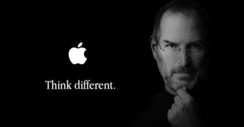
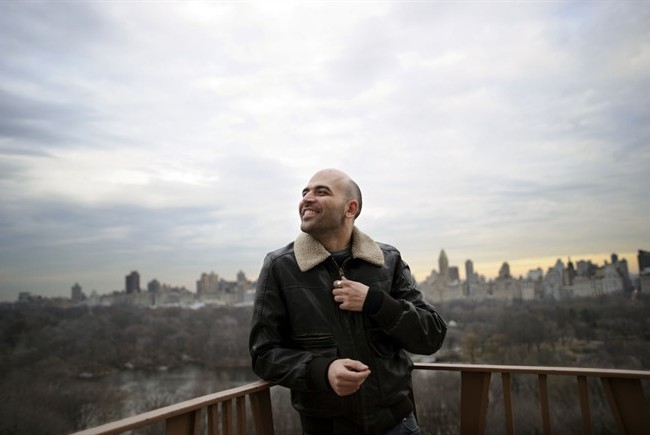

Adriano Olivetti was born in Ivrea and his project was to create a much smaller and lighter typewriter. In 1932 Olivetti became the general director of Olivetti company. In 1950 the typewriter named “Lettera 22” was born and it caused a 500% sales increase. Thanks to the creation of this typewriter,

the Olivetti brand became famous in Italy and abroad and acquired the American company Underwood. In 1960 Olivetti suddenly died of bleeding on a train.
Steve Jobs as born in 1955 and spent a period of his life in which he didn't know what to do. Then he decided to leave for India and together with his friend Steve he created “Apple 1”, which was a calculator similar to the keyboard of a computer. In 1980 the personal computer was born with the name of “Apple 2”. Then he spent a period in which he didn't know what to do of his life. In 1984 he created the mouse and the icon-based graphics. In 1985 Jobs resigned from Apple. In 1990 Apple was outclassed by the sales of Microsoft. In 1998 Imac was born. In 2004 a pancreatic cancer was diagnosed to him. In 2007 the first iPhone was sold. In 2009 Steve underwent a liver transplant. In 2011 he resigned from Apple due to health problems. On October 5th 2011 he died, aged 56.

video “Roberto Saviano talks about Steve Jobs and Adriano Olivetti”:
the death of Steve Jobs was one of the greatest loss for USA. Olivetti's career was much more difficult than Jobs'.
Video “We are history – Adriano Olivetti 4/4”
In 1963 a financial crisis occurred due to a temporary arrest of economy. Much wealth was lost due to the decline of the Olivetti company. Olivetti created a path that nobody was able to follow in Italy after his death.
The Code: Story of Linux documentary (MULTiSUB)
-programs must be realized as a schedule, to follow step by step.
-Microsoft keeps the code of its open source secret.
-8 millions PCs make use of Linux.
-As “Linux” some people mean the operating system, some others mean the kernel.
-Linux is a much easier operating system than the current one.
-Linux is an operating system based on Unix..
-Alan Cox is the closest coworker of Linus.
Schedule of the video “TED”: the mind behind Linux
-The host of the video “TED” interviews the inventor of Linux, Linus Torvalds.
-Linux is used by many Android devices and by many computers.
-Its main feature is constancy
-Torvalds's office may look like a very common office, but actually it is the heart of Linux in the world.
-The green color was used as background because it is relaxing.
-GIT was Torvalds's second project.
-Torvalds changed the future.
-Tesla against Edison.
-Tesla looks like a visionary with crazy ideas.
-Edison was not a very likeable person but did a lot of things.
-Open source idea.